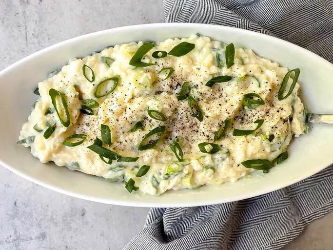

Irish Champ

Description
Irish champ is similar to colcannon but is made by blending green onions or scallions with creamy mashed potatoes. It's great on its own, served steaming hot with extra butter on top, but it's also a perfect side dish for good quality sausages.
Ingredients
- 2 pounds potatoes, peeled and halved
- 1 cup milk
- 1 bunch green onions, thinly sliced
- ¼ cup butter, cut into pieces
- ½ teaspoon salt, or to taste
- freshly ground black pepper to taste
Steps
- Place potatoes into a large pot and cover with salted water; bring to a boil. Reduce the heat to medium-low and simmer until tender, about 20 minutes.
- Drain potatoes well, then return to the pot and cover with a clean dish towel. Place the pot over very low heat until potatoes are dry, 2 to 3 minutes.
- Meanwhile, heat the milk and green onion in a saucepan over medium-low heat until warm, 3 to 4 minutes.
- Once potatoes are dry, add butter and salt; mash with a potato masher until smooth. Stir in warm milk mixture until well combined, then season with pepper.
Home